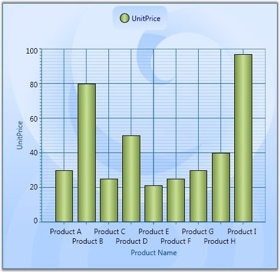
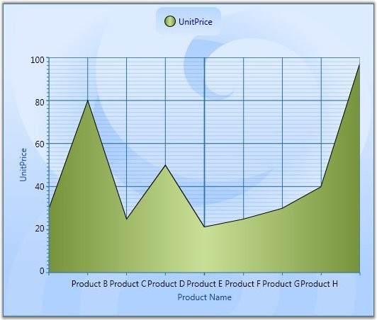
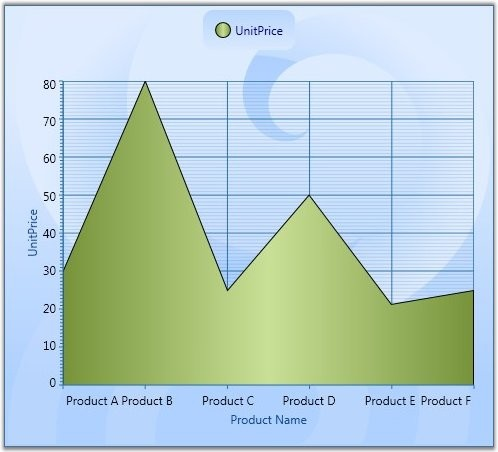

Sometimes the chart dimensions could cause the labels to intersect. The chart will, by default, render those texts one over the other. But, it also has some built-in capabilities to work around this overlap and lets you dictate the technique to follow. Refer to the properties below.
Table 144: ChartAxis Property
|
ChartAxis Property |
Description |
|
IntersectAction |
Hide – labels are hidden to avoid intersection MultipleRows – labels are wrapped into multiple rows to avoid intersection None – no special action Labels may intersect Rotate – labels are rotated to avoid intersection Wrap – labels are wrapped to avoid intersection |
|
HidePartialLabel |
True – hides the labels that appear partially Usually the labels in the edges will be affected. False - labels are drawn as such No action will be taken. |
|
EdgeLabelsDrawingMode |
Center – draws the edge labels at the center of the GridLines Shift – value indicating that edge label should be shifted to either left or right so that it comes within the Chart Area |
|
[C#]
Chart1.Areas[0].PrimaryAxis.IntersectAction = ChartLabelIntersectAction.MultipleRows; Chart1.Areas[0].PrimaryAxis.HidePartialLabel = true; Chart1.Areas[0].PrimaryAxis.EdgeLabelsDrawingMode = EdgeLabelsDrawingMode.Shift; |
|
[XAML]
<syncfusion:ChartArea.PrimaryAxis> <syncfusion:ChartAxis Header="Product Name" IntersectAction="MultipleRows" HidePartialLabel="True" EdgeLabelsDrawingMode="Shift" /> </syncfusion:ChartArea.PrimaryAxis> |
Below given screenshot illustrates various techniques for avoiding the Label intersection.

Figure 212: IntersectAction = "MultipleRows"

Figure 213: HidePartialLabel = "True"

Figure 214: EdgeLabelsDrawingMode = "Shift"
See Also
Axis Label Rotate, Chart Font Settings, Chart Axis Label,